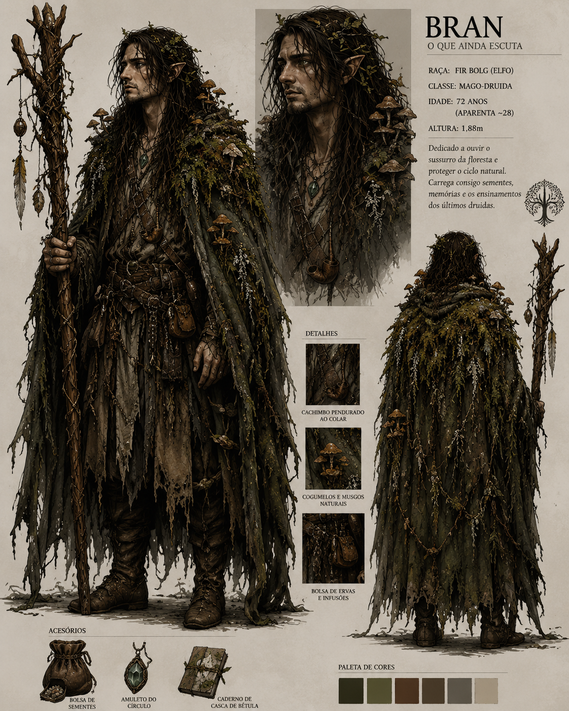
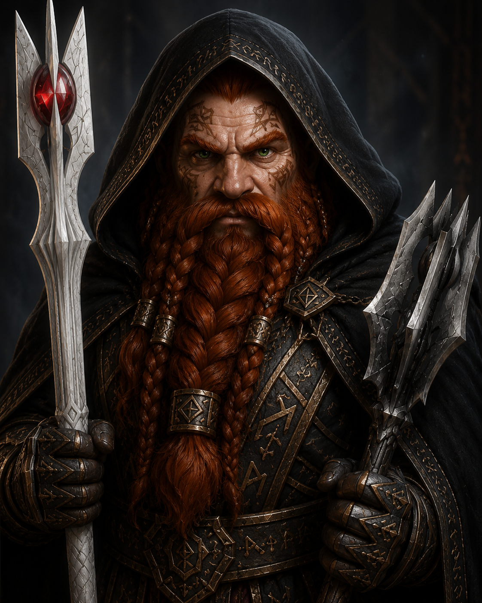
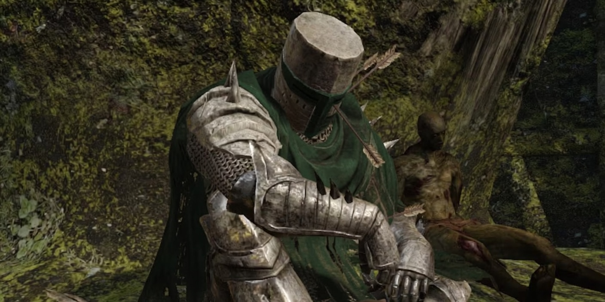

O Código Aeloriano
Cavaleiros juravam proteger os fracos, honrar os antigos espíritos e preservar o equilíbrio.
Chronicles of Elyndrath
O Reino Esquecido
Uma terra de raízes antigas, círculos de pedra, juramentos quebrados e magia telúrica, onde a lembrança da Aurora Dourada ainda resiste sob a névoa da corrupção.
A Terra das Raízes Antigas
Elyndrath foi um reino glorioso entre florestas ancestrais, colinas cobertas de megalitos e rios sinuosos. Suas pedras, bosques e ruínas ainda carregam as marcas de uma era em que o mundo mortal e o Outro Lado respiravam em equilíbrio.
Hoje, esse equilíbrio foi ferido. A corrupção se espalha como uma doença da realidade, alterando criaturas, fragmentando antigas alianças e fazendo com que a memória do reino pareça desaparecer sob raízes, cinzas e silêncio.
O Tempo da Aurora Dourada
Há séculos, os Povos das Colinas e os Clãs Guerreiros foram unidos sob o lendário Rei Aelorian, aceito pelo Trono de Ardruin. Com a lança divina Lirael e a orientação do mago-druida Vaelor, Elyndrath viveu uma era de honra, justiça e harmonia com as forças da natureza.
Cavaleiros juravam proteger os fracos, honrar os antigos espíritos e preservar o equilíbrio.
Círculos de pedra, bosques sagrados e rios profundos serviam como fontes de poder antigo.
O mundo mortal não era isolado; espíritos e presságios participavam do ciclo natural.
A lança divina tornou-se símbolo do reinado, da promessa de unidade e do custo da queda.
A Queda
A ruína começou com Varoth, cavaleiro respeitado que temia que a paz enfraquecesse o reino. Ele envenenou a mente de outros nobres e os convenceu de que Aelorian precisava ser derrubado pelo bem de Elyndrath.
Aelorian venceu Varoth em duelo, mas foi ferido por uma adaga envenenada. A traição se espalhou, a guerra civil partiu os cavaleiros entre leais e rebelados, e múltiplas facções passaram a disputar os restos da Aurora.
Sistema Próprio
A campanha adapta elementos de fantasia medieval e RPGs d20 para um sistema próprio, com atributos clássicos, proficiências narrativas, vantagem e desvantagem, combate direto e espaço para magia, fé, alquimia, exploração e corrupção.
01
1d20 + modificadores contra uma CD.
As dificuldades vão de ações fáceis a feitos quase impossíveis, sempre ajustadas pela situação.
02
Condições importam.
Terreno, magia, equipamento, ferimentos, relíquias e corrupção podem alterar a rolagem.
03
Identidade em jogo.
Combate, druidismo, ocultismo, teologia, medicina, alquimia e exploração definem o modo de agir.
Personagens
Cada personagem revela uma face diferente de Elyndrath: a floresta que ainda escuta, as montanhas que guardam conhecimento e os juramentos de ferro dos antigos cavaleiros.

Fir Bolg · Mago-DruidaO Que Ainda Escuta. Guardião da antiga tradição druídica e da memória da floresta.

Dvergar · MagoEspírito da montanha. Conselheiro, alquimista e viajante de Khern Baldhur.

Humano · CavaleiroIronCloak. Herdeiro errante dos Protetores do Vale-Verde e do Carvalho de Pedra.